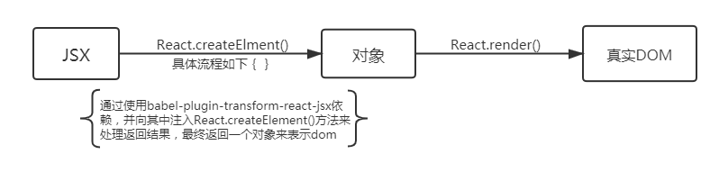

react源码学习笔记
1,JSX
-
JSX是一种js的语法扩展，表面上像HTML，本质上还是通过babel转换为js执行的.其中内部逻辑如下：
- 第一步，安装babel-plugin-transform-react-jsx依赖，参考链接
- 第二步，新建并配制.babelrc如下
-
第三步，jsx通过该依赖转换结果如下

-
第四步，最终通过执行自定义注入的方法返回profile对象如下(例子如下)
- 在React中，JSX本质上就是转换为React.createElement在React内部构建虚拟Dom，最终渲染出页面上的
2,虚拟DOM
-
React中虚拟dom的创建流程本质如下
 - 什么是虚拟dom? 简单来说,就是使用js对象来描述真实dom元素
-
为什么要使用虚拟dom?
1,传统的dom在操作的时候有太多额外的属性，比如说我们在浏览器中打印一个console.dir(document.body), 就可心发现它有太多的属性，由于属性过多，导致我们任何的dom操作都会影响到性能，而虚拟dom则是使用简单 的js对象来描述一个完整的dom。在渲染到浏览器之前，我们通过它来管理，所以说一旦有任何的更改， 我们不需要频繁的去操作dom,只需要去对这个对象做diff操作即可。最后统一转换为真实的dom即可。这也就是 虚拟dom快而且性能好的原因。
浏览器渲染页面的原理及流程:
浏览器将域名通过网络通信从服务器拿到html文件后，如何渲染页面呢？
1.根据html文件构建DOM树和CSSOM树。构建DOM树期间，如果遇到JS，阻塞DOM树及CSSOM树的构建，优先加载JS文件，加载完毕，再继续构建DOM树及CSSOM树。
2.构建渲染树（Render Tree）。
3.页面的重绘（repaint）与重排（reflow，也有称回流）。页面渲染完成后，若JS操作了DOM节点，根据JS对DOM操作动作的大小，浏览器对页面进行重绘或是重排。